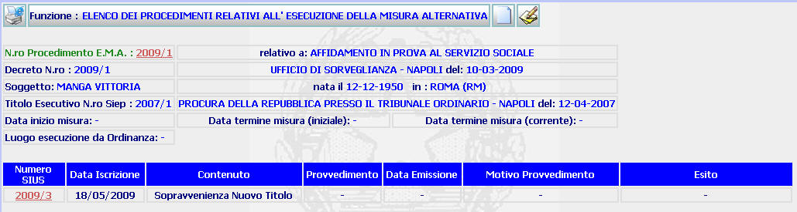

Per visualizzare il dettaglio del procedimento SIUS dei fascicoli relativi all'esecuzione della misura alternativa (c.d. fascicoli "figli") l'utente deve cliccare sul link relativo all' Anno/Numero del procedimento evidenziato in rosso;
ELENCO PROCEDIMENTI RELATIVI ALL'ESECUZIONE DELLA MISURA ALTERNATIVA: La funzione consente di visualizzare l'elenco (ottenuto partendo dalla maschera di ricerca procedimenti di esecuzione misure alternative) di tutti i procedimenti (c.d. fascicoli "figli") iscritti con riferimento ad un procedimento di esecuzione misura alternativa (c.d. fascicolo padre").
LE MASCHERE VIDEO
La funzione viene realizzata attraverso la maschera seguente in cui compare l'elenco dei procedimenti iscritti con riferimento ad un procedimento di esecuzione di misura alternativa

COME FARE PER ...
| Per
visualizzare il
dettaglio del procedimento di
E.M.A. l'utente deve
cliccare sul link relativo all' Anno/Numero del procedimento
evidenziato in rosso;
| |
|
Per visualizzare il dettaglio del procedimento SIUS dei fascicoli relativi all'esecuzione della misura alternativa (c.d. fascicoli "figli") l'utente deve cliccare sul link relativo all' Anno/Numero del procedimento evidenziato in rosso; |
| Per
iscrivere un nuovo procedimento di EMA
(cd fascicolo "figlio") a carico del soggetto l'utente deve cliccare sul pulsante
|
| Per
inserire/modificare i dati dell'esecuzione della misura alternativa l'utente deve cliccare sul pulsante
|
CAMPI
La presente funzione non prevede campi da compilare
PULSANTI
Sono presenti i pulsanti
 ,
,
 e
e  facenti parte del gruppo di
pulsanti di "Uso Comune"
facenti parte del gruppo di
pulsanti di "Uso Comune"
BOTTONI
Oltre ai comandi funzionali relativi al menù verticale non sono presenti altri bottoni